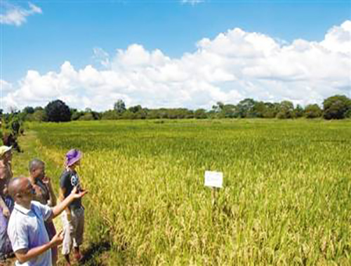

管理员登录
登录
注册
欢迎来到智慧农业网站，本网站提供最新的农产品动态，你想要的信息尽在智慧农业

坦桑尼亚农民查看中国水稻技术耕作的稻田
中国农业沿“一带一路”走向世界
巴基斯坦学生与中国导师查看实验作物生长
科学研究:光敏色素调控植物花粉发育
1
2
3
4
实时状态查询
天气情况曲线
植株生长情况
专 家 问 答
评 论 专 区
蔬菜大棚的温度变化趋势表(早6：30-晚9：30)
蔬菜大棚的湿度变化趋势表(早6：30-晚9：30)
蔬菜大棚的二氧化碳变化趋势表(早6：30-晚9：30)
蔬菜大棚的氧气变化趋势表(早6：30-晚9：30)
蔬菜大棚的施肥情况(春-夏季)
蔬菜大棚的施肥情况(秋-冬季)
智慧农业的体现
农产品溯源
质 量 保 证
环 境 监 控
食 品 安 全
农业命脉强根基：大力实施节水工程
食品药品总局：进一步加强小麦粉质量安全
智慧农业：N12A型微电脑农药残留速测仪
智慧农业：B2型微电脑土壤(肥料)养分速测仪
智慧农业：ZSP12综合食品安全检测仪
智慧农业：SY6地沟油速测仪